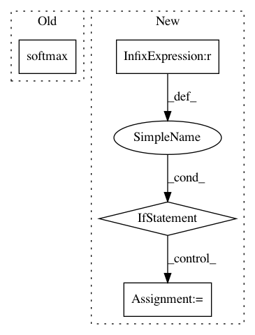

addcb13fb3dcd2cdbc32ac81611a78ac1c19b02f,niftynet/network/dense_vnet.py,DenseVNet,layer_op,#DenseVNet#Any#Any#Any#,70
Before Change
segmentation = segmentation+SpatialPriorBlock([12]*spatial_rank,output_shape)
segmentation=image_resize(segmentation,input_size[1:-1])
tf.summary.scalar("segmentation".format(idx), tf.reduce_mean(tf.square(segmentation)), [logging.LOG])
logging.image3_axial("seg",tf.nn.softmax(segmentation)[:,:,:,:,1:]*255.,3,[logging.LOG])
logging.image3_axial("img",tf.minimum(255.,tf.maximum(0.,(tf.to_float(downsampled_img)/2.+1.)*127.)),3,[logging.LOG])
return segmentation
After Change
tf.summary.scalar("down{}".format(idx),tf.reduce_mean(tf.square(down)),[tf.GraphKeys.SUMMARIES])
all_segmentation_features.append(image_resize(skip,output_shape))
hack=True
if hack == True:
all_segmentation_features=[all_segmentation_features[0]]+all_segmentation_features
segmentation = ConvolutionalLayer(
self.num_classes+1,
kernel_size=hp["final_kernel"],
with_bn=False,
In pattern: SUPERPATTERN
Frequency: 4
Non-data size: 4
Instances
Project Name: NifTK/NiftyNet
Commit Name: addcb13fb3dcd2cdbc32ac81611a78ac1c19b02f
Time: 2017-08-23
Author: egibson@cs.ucl.ac.uk
File Name: niftynet/network/dense_vnet.py
Class Name: DenseVNet
Method Name: layer_op
Project Name: NifTK/NiftyNet
Commit Name: 4421754f9886233e90563eb8088348bb36024095
Time: 2018-01-12
Author: wenqi.li@ucl.ac.uk
File Name: niftynet/layer/loss_segmentation.py
Class Name: LossFunction
Method Name: layer_op
Project Name: NifTK/NiftyNet
Commit Name: 3a5ace850931e91c55a692ae7ec716a57e66f4e6
Time: 2018-01-26
Author: wenqi.li@ucl.ac.uk
File Name: niftynet/layer/loss_segmentation.py
Class Name: LossFunction
Method Name: layer_op
Project Name: ray-project/ray
Commit Name: e153e3179f54819e06c07df21bbf49e260dec5f2
Time: 2020-04-01
Author: sven@anyscale.io
File Name: rllib/utils/exploration/parameter_noise.py
Class Name: ParameterNoise
Method Name: postprocess_trajectory